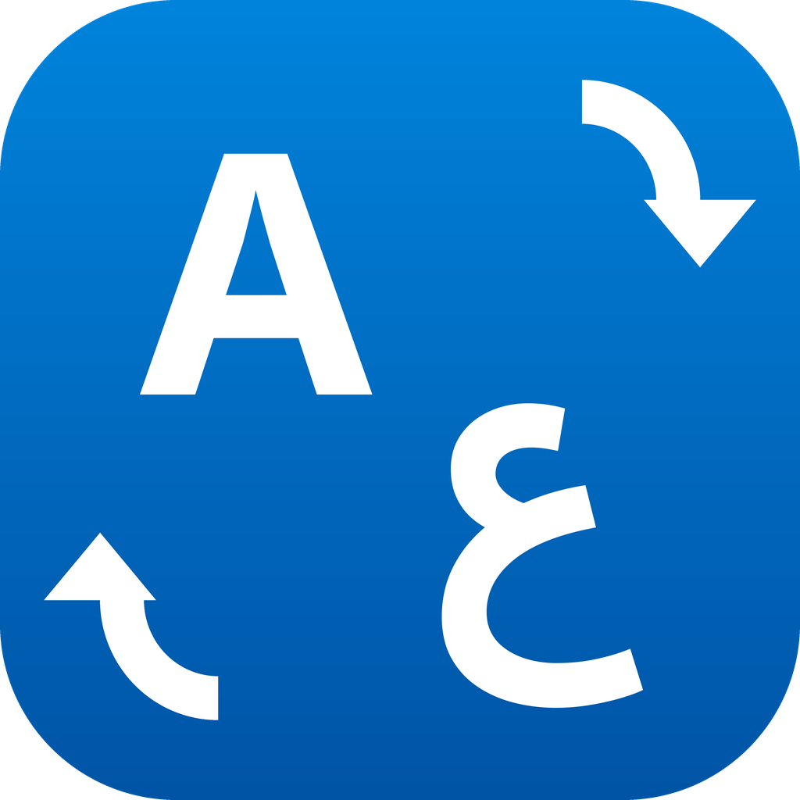

Typed in the wrong keyboard layout? Select the text in any Windows app and press Ctrl+Shift+L (configurable). Layout Fixer converts it between the Arabic (101) and English (US) layouts, so hgsghl ugd;l becomes السلام عليكم, and it works the other way too.
Privacy policy · Support: hibari@mail.grokbot.com
كتبت بلغة لوحة المفاتيح الخطأ؟ حدّد النص في أي برنامج واضغط Ctrl+Shift+L ليتم تحويله فوراً بين العربية والإنجليزية.
سياسة الخصوصية · الدعم: hibari@mail.grokbot.com